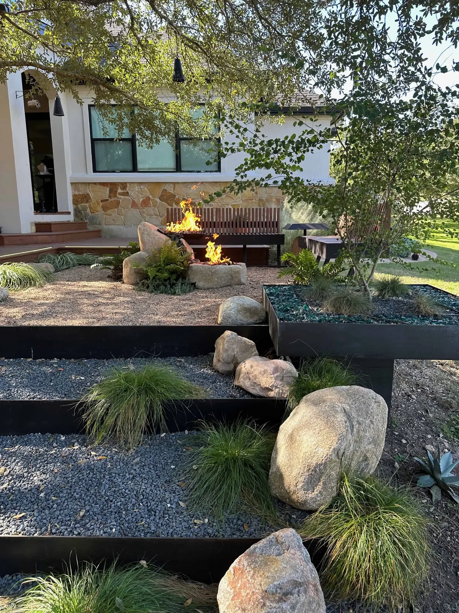
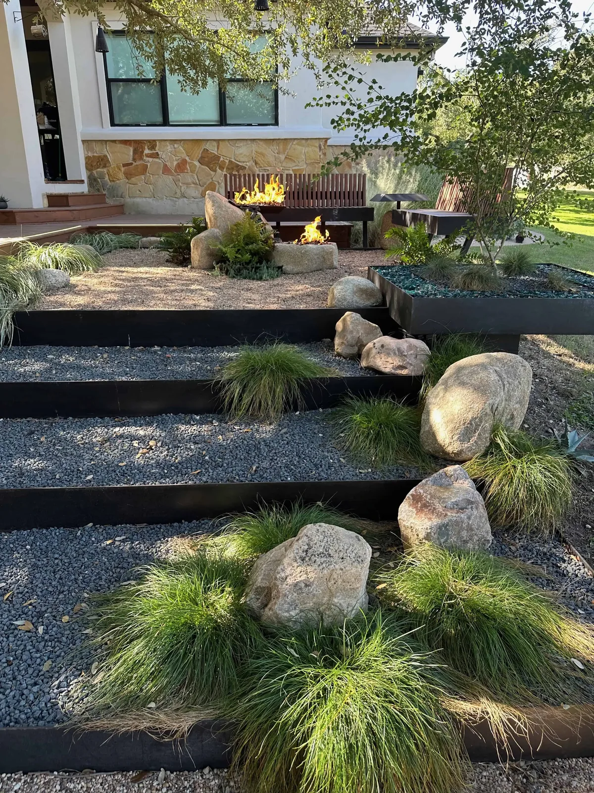
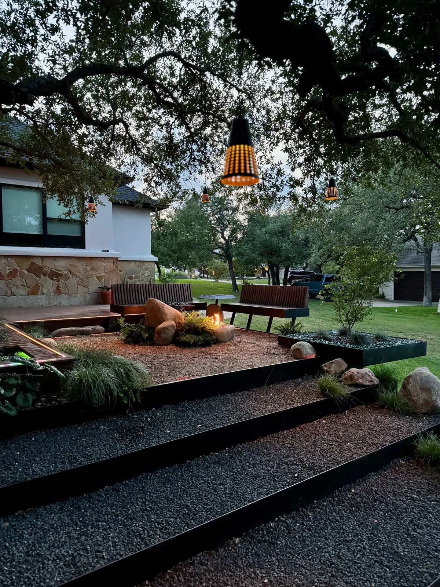

On September 4, 2011, in the driest year Texas has recorded, a wildfire moved into Steiner Ranch, burned about 125 acres, destroyed 23 homes, and forced more than 1,000 homes to evacuate. The community has its own Firewise committee, and a landscape here should start with defensible space.
Steiner Ranch's water comes from Travis County WCID 17, a district created in 1959. In 2023 the district fined or shut off water to several hundred Steiner Ranch customers for violating conservation restrictions. A landscape that runs on rainfall never shows up on that list.
Steiner Ranch lots drop toward canyons and the lake, with thin soil over limestone and deer on every street. Terraces have to be held, water has to be routed, and the plant list has to assume browsing.
Fire-wise landscaping is mostly a question of what sits within a few feet of the house. Put hardscape there: marbled concrete, decomposed granite, gravel strips held by 1/4-inch steel edging, and nothing that burns. Bark mulch doesn't belong there. Shrubs are spaced apart rather than massed, and tree limbs are kept clear of the roof. The decomposed granite guide and marbled concrete patios cover the materials.
The slopes get 1/4-inch steel retaining walls on concrete footers drilled into the limestone, with deadman anchors and a French drain behind every tier. Steel does not burn, is thin enough to route around oaks, and holds a canyon grade without a wide excavation. Read the engineering in our retaining wall guide and see the steel retaining wall service.
Lighting is 24V FCOB and COB, which runs cool and low, and the fire feature, if there is one, is a boulder pit on propane: flame without embers, which matters on a lot that has seen a wildfire. See fire pits.
These photos are from our steel-terrace build in Circle C, Austin, on a sloped front yard under live oaks: stepped 1/4-inch steel edges holding gravel terraces, limestone boulders, native grasses, a fire pit, and a slatted wood bench. Gravel instead of mulch, steel holding the grade, nothing against the house that burns: it is the fire-wise pattern we bring to Steiner Ranch.



Fire-wise planting means low fuel and open spacing: agaves and yuccas, which hold water in their leaves, set in decomposed granite with air between them. Whale's Tongue, Artichoke, softleaf yucca, and sotol are the backbone; our cold-hardy agave guide lists the ones that take a freeze.
Around them, natives the deer skip and the WCID 17 meter never sees. Autumn sage and blackfoot daisy can sit close to the house. Texas sage and Mexican feathergrass go 30 feet or more out, where Travis County AgriLife’s Firewise guidance places them. All are on our native plants guide and summer survivors list.
A Firewise pair. Texas A&M AgriLife names desert willow as a fire-resistant tree, and the Texas A&M Forest Service prefers deciduous trees to evergreens and low flowering plants to shrubs near the home. Four-nerve daisy is that low layer: a few inches of yellow bloom that deer skip.
Chilopsis linearis
Tetraneuris scaposa
More in our native plants guide. Plant data: Lady Bird Johnson Wildflower Center, Texas A&M AgriLife.
Tell us about your Steiner Ranch lot, where it slopes, and what sits against the house. We'll start with defensible space.
Get a Free Quote →